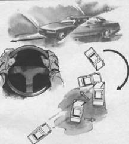

Аквапланирование
Когда автомобиль на большой скорости преодолевает водную поверхность (лужу, яму с водой, реку), то возникает явление аквапланирования, при котором начинается скольжение колес по поверхности воды. При этом управляемость автомобиля уменьшается и может практически прекратиться.
Критическая ситуация чаще всего возникает после аквапланирования, когда передние колеса вступают в контакт с твердым грунтом. Когда автомобиль попадает в лужу, контакт с препятствием (водой) чаще всего происходит вначале одним из передних колес. Торможение при этом вызывает вращательный импульс и занос под определенным углом, под которым автомобиль попадает в воду. Даже хорошо подготовленный профессионал тотчас реагирует на занос, забывая, что реакция опоры не дает желаемого результата по стабилизации автомобиля. Когда автомобиль выходит на твердый грунт, его колеса повернуты и быстро реагируют. Реакция оказывается очень сильной в связи с тем, что задние колеса, скользящие по воде, не влияют на управление. Возникающий повторный занос, направленный в противоположную сторону, и является тем экстремальным моментом, который может привести к вращению и опрокидыванию, если водитель опаздывает со стабилизацией автомобиля тотчас после аквапланирования.
Преодоление серии луж правыми или левыми колесами вызывает многократную реакцию от переднего колеса на рулевое колесо, особенно на современных автомобилях, оборудованных реечным рулевым механизмом (ВАЗ-2108, ВАЗ-2109; “Москвич-2141” и др.). Эта реакция может быть неожиданной по воспринимаемому руками усилию и существенной по силе. При “свободном” произвольном захвате кончиками пальцев рулевое колесо может быть выбито из рук водителя и автомобиль совершит непроизвольный маневр, который может привести к ритмическому заносу.
Сохранить устойчивость при аквапланировании можно следующими приемами:
– при преодолении водных преград, когда все колеса автомобиля подвержены аквапланированию, нужно предварительно стабилизировать автомобиль для прямолинейного движения, исключить любые маневры и повороты рулевого колеса, сохранить прямое положение колес;
– при преодолении водной поверхности одной стороной автомобиля загрузить предварительным маневром колеса, которые находятся на грунте, применить силовое стопорящее руление, чтобы сопротивляться повороту колес, попавших в воду, приготовиться к экстренной реакции на занос после аквапланирования;
– при попадании в воду одного управляемого колеса нужно задержать реакцию на занос до контакта с плотным грунтом и начать реакцию по стабилизации тотчас после прохождения лужи. Если допущена ошибка при стабилизации, то нужно быстро приготовиться к реакции на ритмический занос.

Преодолевая лужу на большой скорости, стремитесь: двигаться по прямой, исключая любые маневры; силовым симметричным хватом рулевого колеса в верхнем секторе зафиксировать его в неподвижном положении; приготовьтесь к реакции на занос, при выходе передних колес на твердый грунт.
Преодолевая водные преграды, необходимо:
– преодолевать препятствия по прямой;
– сохранять неподвижное положение рулевого колеса;
– руки на рулевом колесе держать в положении “10—2” или “9—З” (по аналогии с цифрами на циферблате часов);
– напрягая мышцы-сгибатели и мышцы-разгибатели рук, обеспечивать сопротивление непроизвольному повороту рулевого колеса;
– быстро отреагировать на занос после выхода на плотный грунт;
– продолжать борьбу за стабилизацию автомобиля, если не удалось этого достичь одномоментным действием рулевого колеса.